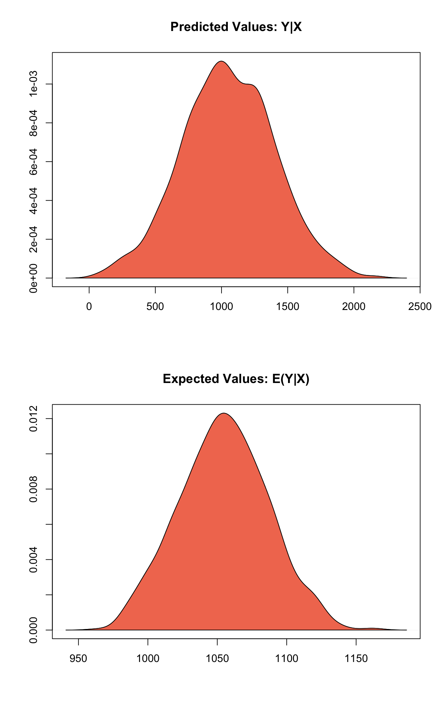

Built using Zelig version 5.1.1.90000
zelig() accepts multiply imputed data output objects from the Amelia package as the data argument.
First, using the Amelia package, we multiply impute a dataset with missing values:
library("Amelia")## Loading required package: Rcpp## ##
## ## Amelia II: Multiple Imputation
## ## (Version 1.7.4, built: 2015-12-05)
## ## Copyright (C) 2005-2017 James Honaker, Gary King and Matthew Blackwell
## ## Refer to http://gking.harvard.edu/amelia/ for more information
## ##data(africa)
a.out <- amelia(x = africa, cs = "country", ts = "year", logs = "gdp_pc")## -- Imputation 1 --
##
## 1 2 3
##
## -- Imputation 2 --
##
## 1 2 3
##
## -- Imputation 3 --
##
## 1 2
##
## -- Imputation 4 --
##
## 1 2
##
## -- Imputation 5 --
##
## 1 2 3Then we can use the output object from the Amelia package directly in the data argument for Zelig:
z.out <- zelig(gdp_pc ~ trade + civlib, model = "ls", data = a.out)## How to cite this model in Zelig:
## R Core Team. 2007.
## ls: Least Squares Regression for Continuous Dependent Variables
## in Christine Choirat, Christopher Gandrud, James Honaker, Kosuke Imai, Gary King, and Olivia Lau,
## "Zelig: Everyone's Statistical Software," http://zeligproject.org/Zelig will automatically extract the imputed datasets from the Amelia object, and run the requested model in each of them. When the estimated model parameters are summarized, the results from each imputed dataset are available, but more importantly, the combined answer across the imputed datasets calculated by “Rubin’s Rules” are automatically presented:
summary(z.out)## Model: Combined Imputations
##
## Estimate Std.Error z value Pr(>|z|)
## (Intercept) 111.76 97.74 1.14 0.25287
## trade 18.13 1.25 14.54 < 2e-16
## civlib -628.06 182.57 -3.44 0.00058
##
## For results from individual imputed datasets, use summary(x, subset = i:j)
## Next step: Use 'setx' methodTo see the result from an individual imputed dataset, we use the subset argument as:
summary(z.out, subset = 2:3)## Imputed Dataset 2
## Call:
## z5$zelig(formula = gdp_pc ~ trade + civlib, data = a.out)
##
## Residuals:
## Min 1Q Median 3Q Max
## -676.07 -227.89 -97.05 171.76 960.10
##
## Coefficients:
## Estimate Std. Error t value Pr(>|t|)
## (Intercept) 111.436 97.503 1.143 0.255414
## trade 18.109 1.245 14.550 < 2e-16
## civlib -621.304 181.579 -3.422 0.000858
##
## Residual standard error: 349.5 on 117 degrees of freedom
## Multiple R-squared: 0.6541, Adjusted R-squared: 0.6482
## F-statistic: 110.6 on 2 and 117 DF, p-value: < 2.2e-16
##
## Imputed Dataset 3
## Call:
## z5$zelig(formula = gdp_pc ~ trade + civlib, data = a.out)
##
## Residuals:
## Min 1Q Median 3Q Max
## -679.4 -217.8 -95.6 164.1 960.8
##
## Coefficients:
## Estimate Std. Error t value Pr(>|t|)
## (Intercept) 121.960 95.679 1.275 0.204947
## trade 18.119 1.224 14.803 < 2e-16
## civlib -645.386 179.835 -3.589 0.000486
##
## Residual standard error: 346.1 on 117 degrees of freedom
## Multiple R-squared: 0.662, Adjusted R-squared: 0.6563
## F-statistic: 114.6 on 2 and 117 DF, p-value: < 2.2e-16
##
## Next step: Use 'setx' methodWhen quantities of interest are plotted, such as expected and predicted values and first differenences, these are correctly pooled across those from each of the m imputed datasets:

Zelig also includes a function called from_zelig_model() to conform multiply imputed data sets from other sources to a form that zelig can use.